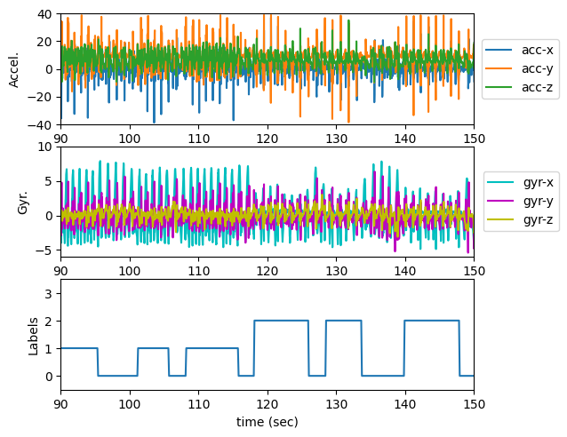
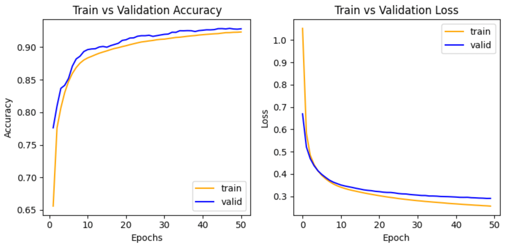
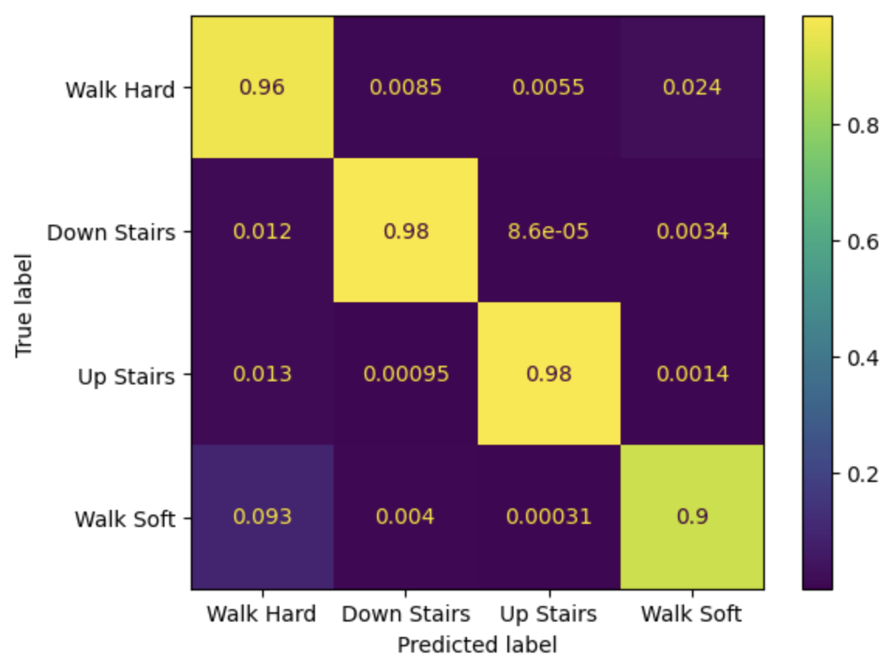
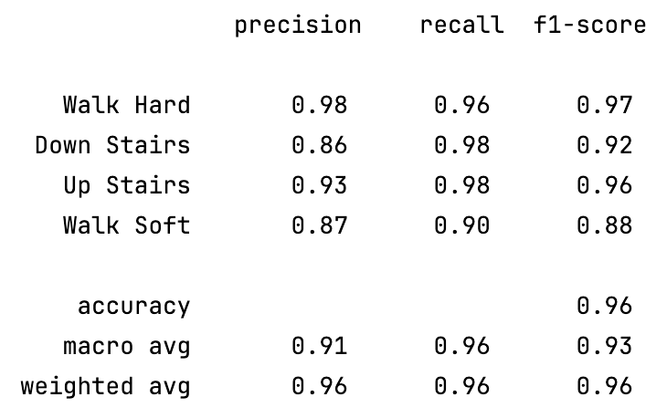

Prosthetic Gait Analysis
Motivation
Lower-limb robotic prosthetics can execute different behaviors based on the terrain users are walking on.
By using telemetry data from the prosthetic, we can analyze the gait of the user and determine the terrain
type. In this project our goal will be recognition of human gait while walking on hard and soft terrains, and
climbing up and down stairs.
Data

The dataset consists of telemetry data from a sensor device attached to the lower limb of a user and consists
of xyz accelerometers and xyz gyroscope measurements. The test data consists of 25 separate trials, with
accelerometer and gyroscope data sampled at 40 Hz and labels with associated timestamps sampled at 10 Hz. The
labels indicate the type of terrain the user is walking on as follows:
- 0 - Standing or walking on solid ground
- 1 - Walking down stairs
- 2 - Walking up stairs
- 3 - Walking on grass
The sample data plot shows a 60 second segment of accelerometer and gyroscope data, along with the
corresponding labeled gait activities.
Model Implementation and Training
Multiple machine learning architectures were explored including Random Forest, MLP, and 1D CNN.
Variations in hyperparameter configurations were evaluated in the neural network architectures including
number of layers, number of neurons, dropout rates, and learning rates. All models were implemented using
PyTorch and trained on Apple's M1 Pro 16-core GPU.
MLFlow was used to track numerous variations of the MLP and 1D CNN train/test cycles. Each
train/validation/test experiment was run up to 100 epochs with early stopping enabled when 3 occurences of
the validation loss of less than .0001 with the previous epoch.

The graphs seen here show the training and validation accuracy and corresponding loss for each epoch. In this
particular experiment the accuracy for both training and validation steadily increase and converge causing the
early stopping feature to trigger after 50 epochs. This indicates that the model was learning effectively
without significant overfitting while showing a corresponding decrease in loss suggesting the model is
well-trained and generalizes well to new data.
Performance Analysis
When analyzing the performance of the various models, we focused on the F1-Score of model results using the
test data set. The F1-score is a balanced metric that considers both precision and recall, making it a reliable
measure for comparing model performance, especially in multi-class classification problems like this one. The
Random Forest model achieved an F1-Score of 0.71, while the best MLP F1-Score reached 0.75 with 4 hidden
layers, 64 neurons per layer.
The 1D CNN model quickly surpassed the F1-Scores of the other models. With hyperparameter tuning, the most
successful 1D CNN configuration
achieved an F1-Score (macro average) of 0.93 with 2 convolutional layers and 4 fully connected layers, using a ReLU
activation and dropout (20%) between each layer.

The confusion matrix shows the model's high accuracy in classifying different gait types with high
probabilities. For example, "Down Stairs" was correctly predicted 98% of the time, and "Up Stairs" was
correctly predicted 98% of the time. The off-diagonal values are very low, indicating a low rate of
misclassification.

The metrics table confirms the strong performance. The macro
average F1-score is 0.93, with high precision and recall values across all gait types. "Walk Hard" and
"Up Stairs" show particularly strong performance with F1-scores of 0.97 and 0.96, respectively. The lowest
performance is for "Walk Soft," with an F1-score of 0.88, but this is still a strong result.